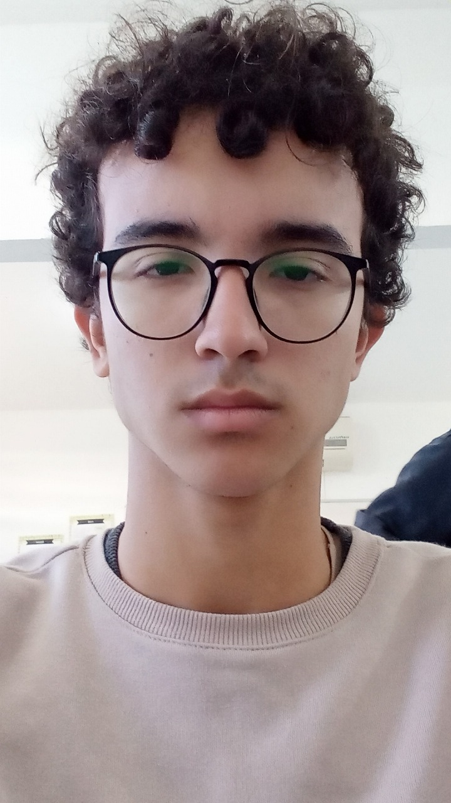
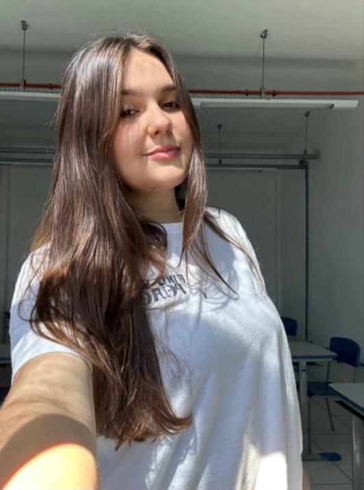

sobre nós

Pedro Antonio Schetz Dias da Silva
primeiro ano do IFC
Líder / Codificador

Arthur S. Schmidt
primeiro ano do IFC
Codificador / Projeto
Otavio felipe
primeiro ano do IFC
Codificador / Projeto
Ana Carolini
primeiro ano do IFC
Redes Socias

Irene Bittelbrunn
primeiro ano do IFC